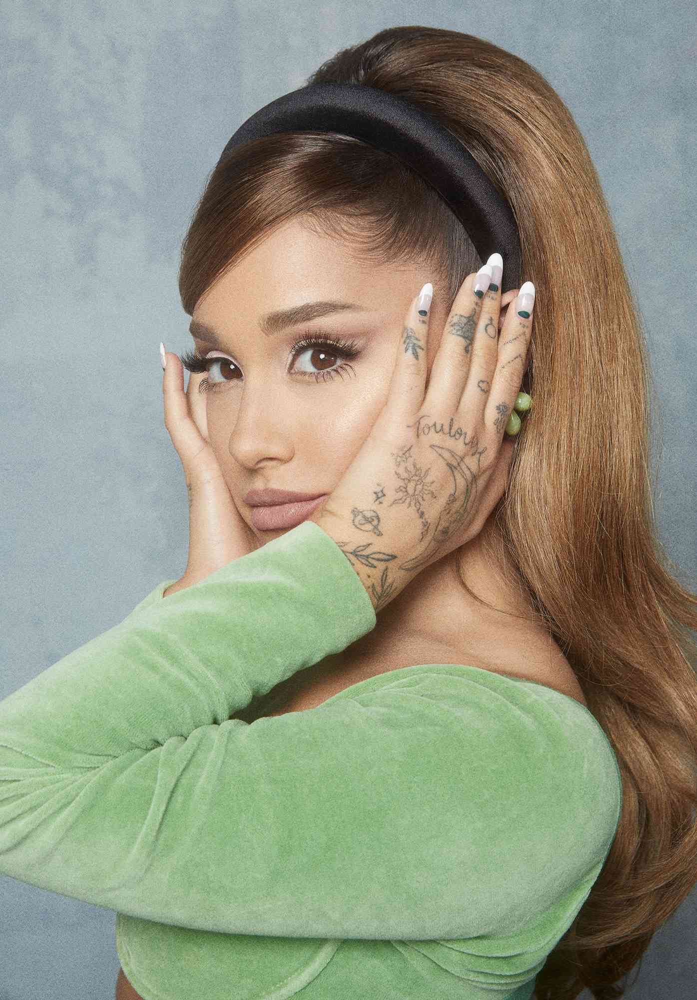
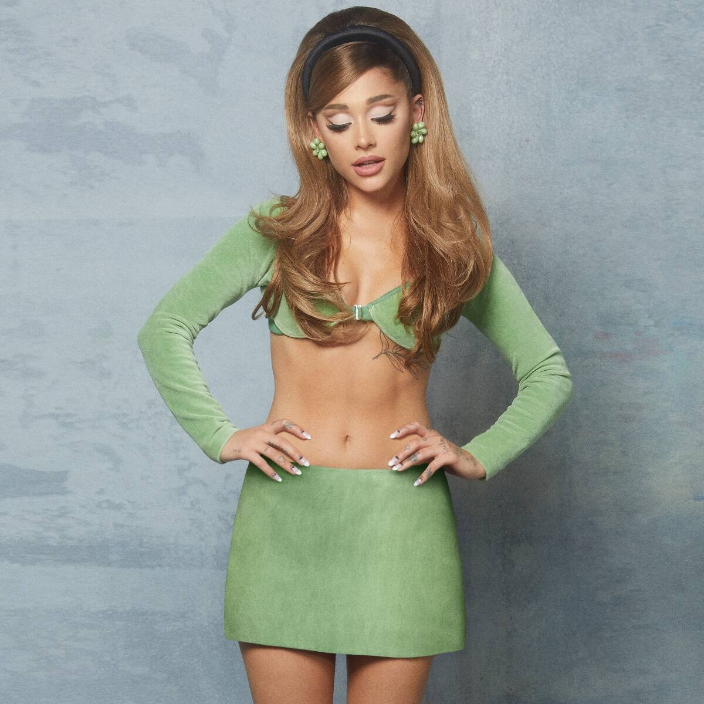
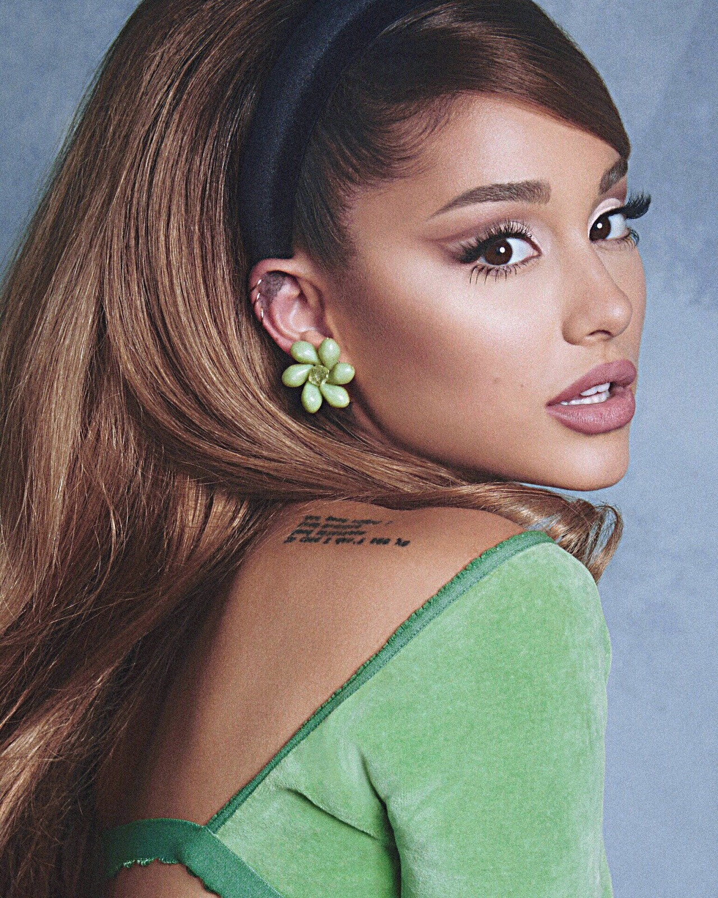

Ariana Grande-Butera, mais conhecida como Ariana Grande, é uma cantora norte-americana que nasceu 26 de junho de 1993. Ela começou sua carreira na adolescência, quando atuou em um musical da Broadway.
Em 2010, ela estreou na televisão com a série Victorious, da Nickelodeon. Com o sucesso da trilha sonora, em que ela também cantava, a ajudou a deslanchar como cantora, o que rendeu a ela um Grammy.
Ariana tem 14 álbuns, atualmente a cantora laçou um novo album chamado Eternal Sunshine, que alcançou top 1 várias plataformas de música.
Ariana Grande tem mais de 132 prêmios ganhos e 410 nomeações. Incluindo: American Music Awards com 3 ganhos e 11 nomeações, Billboard Music Awards com 2 ganhos e 22 nomeações, MTV Europe Music Awards com 3 ganhos e 25 nomeações, entre vários outros.
A cantora nasceu em Boca Raton (Flórida, EUA). Ela é filha de Joan Grande e Edward Butera. Ariana, que tem ascendência italiana e grega/norte-africana, foi criada no mesmo lugar que nasceu, e desde cedo mostrava seu talento em cantar, atuar e dançar.
Com o objetivo de crescer a carreira, Ariana fez o teste para uma série e foi selecionada para interpretar uma das personagens principais da série, a Cat Valentine, e a partir dai, a carreira da mesma começou a crescer cada vez mais.
